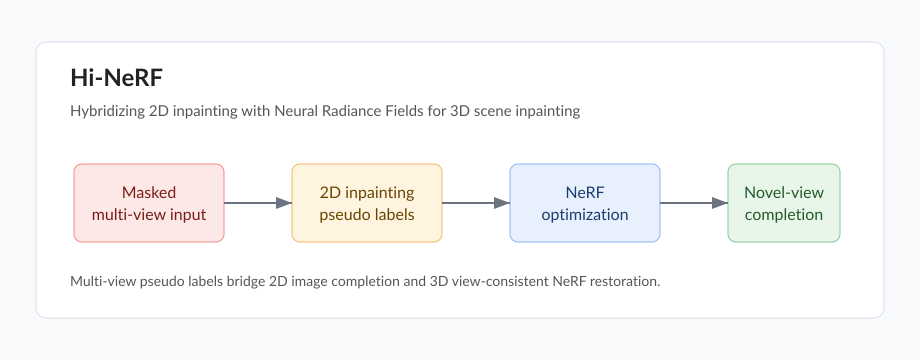

Hi-NeRF: Hybridizing 2D Inpainting with Neural Radiance Fields for 3D Scene Inpainting
ACCV 2024, CCF-C
Xianliang Huang, Shuhang Chen, Zhizhou Zhong, Jiajie Gou, Jihong Guan, Shuigeng Zhou
Paper PDF DOI Code pending Video pending

Overview
Hi-NeRF combines 2D image inpainting with neural radiance fields for 3D scene inpainting. The method uses multi-view inpainting cues to fill missing or removed regions and optimizes a NeRF representation for view-consistent 3D restoration.
Highlights
- Hybridizes 2D inpainting priors with neural radiance field reconstruction.
- Uses multi-view pseudo labels to supervise consistent 3D scene completion.
- Targets 3D object removal and scene inpainting from posed multi-view images.
- Provides a NeRF-based pipeline for restoring masked regions across novel views.
Citation
@inproceedings{huang2024hinerf,
title={Hi-NeRF: Hybridizing 2D Inpainting with Neural Radiance Fields for 3D Scene Inpainting},
author={Huang, Xianliang and Chen, Shuhang and Zhong, Zhizhou and Gou, Jiajie and Guan, Jihong and Zhou, Shuigeng},
booktitle={Proceedings of the Asian Conference on Computer Vision},
pages={2855--2871},
year={2024}
}